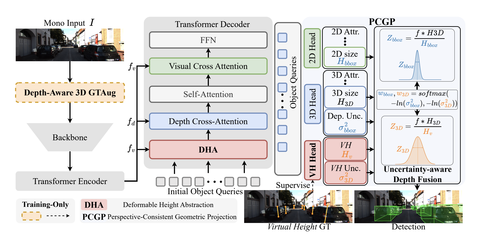
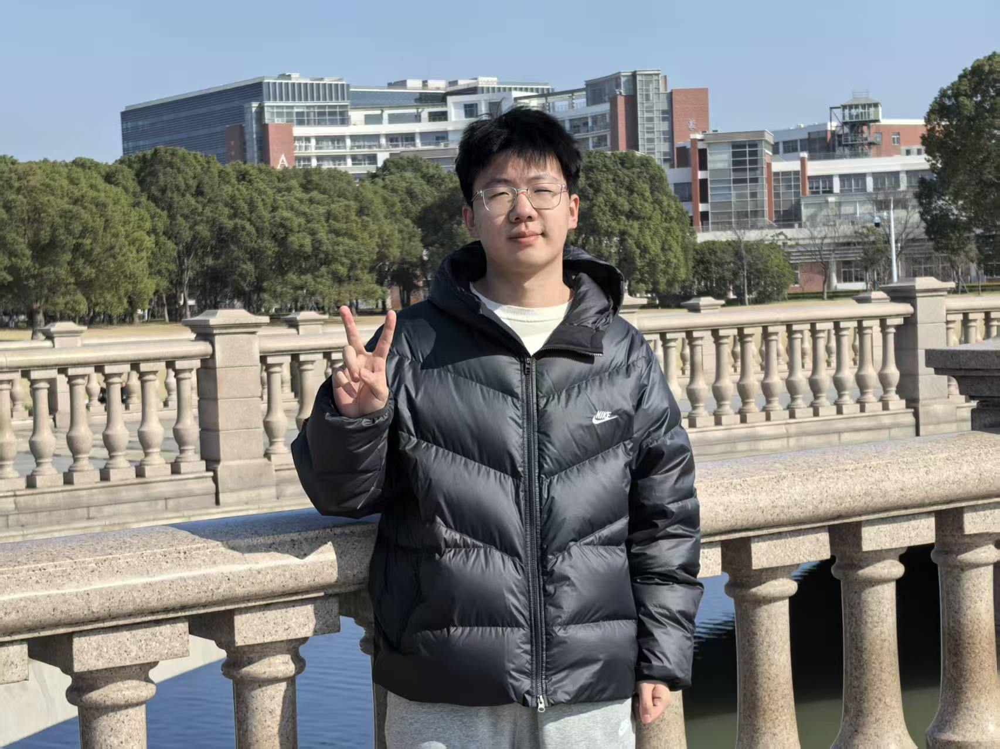

MonoHeight: Height-Guided Perspective Consistency for Monocular 3D Object Detection
IEEE Transactions on Image Processing · Under review
Computer Science Undergraduate · BUPT
I am a third-year undergraduate in Computer Science and Technology at Beijing University of Posts and Telecommunications. I previously worked on computer vision with Guoxin Zhang, and I am grateful for his guidance in introducing me to vision-language-action (VLA) research. I am also a remote research assistant at AutoLab, Shanghai Jiao Tong University, advised by Prof. Zhipeng Zhang, working on robot in-context learning.
1529321606 [at] bupt.edu.cn

My research interests span computer vision, robot learning, vision-language-action (VLA) models, and reinforcement learning. I am particularly interested in how demonstrations and contextual information support policy adaptation and generalization.

IEEE Transactions on Image Processing · Under review
B.S. student in Computer Science and Technology · School of Computer Science
Sophomore-year ranking: 5 / 359 (top 1.39%) · Outstanding Undergraduate Scholarship
Research Assistant · Remote
Advised by Prof. Zhipeng Zhang
Research on robot in-context learning, policy adaptation, and generalization across tasks and environments.